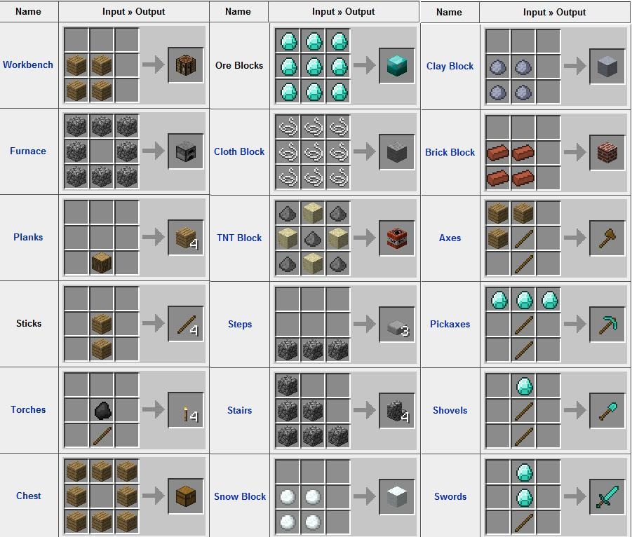

We're going to explore some HTML and Javascript basics using this page.
We can make our own version of a crafting station using some Javascript! It won't look fancy at first, but it'll let us define recipes and craft them. Later we'll add a nice visual interface so that we can see what we're doing, just like in the actual game.
Here's an example inventory:
And here is our crafting table: